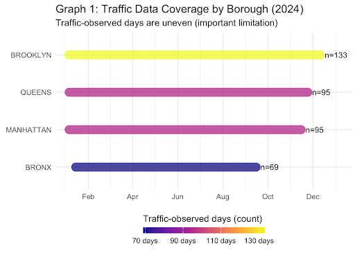
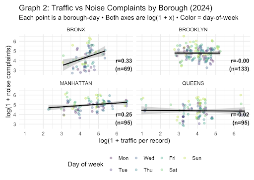
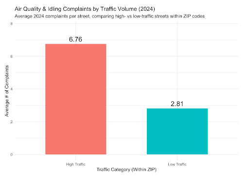
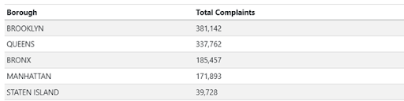
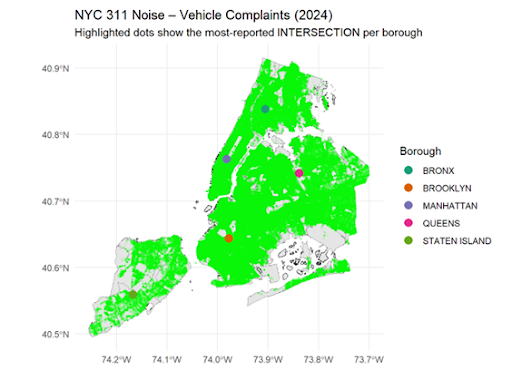

Group Report: How Does Traffic Volume Affect Urban Life in New York City in 2024?
Introduction
Traffic congestion is a common part of daily life in New York City and affects how residents experience their neighborhoods. Beyond causing delays, traffic contributes to noise, air pollution, and stress, influencing urban quality of life. This project examines how traffic volume affected life in 2024 by linking traffic patterns with resident-reported 311 complaints. The main question asks how traffic across the city relates to complaints about noise, air quality, and street conditions. Data from NYC Open Data were used, including Automated Traffic Volume Counts, which provide hourly vehicle counts at monitored streets, and 311 Service Requests, which capture resident complaints. Combining these datasets allows a data-driven view of how traffic aligns with perceived disruptions across the city.
SQ1. Citywide Temporal Patterns
This question examines when traffic volume and 311 complaint activity peak citywide and whether late-night traffic generates more complaints than daytime traffic. Traffic counts and 311 complaints were aggregated by hour and day of week to identify periods when traffic most affects residents’ quality of life and highlight times for potential interventions.
1.1 Day-of-Week Patterns
Results for the week show that traffic volume peaks midweek, from Tuesday through Thursday, with average daily traffic exceeding 40,000 vehicles. In contrast, 311 complaints reach their highest level on Mondays, averaging 10,237 complaints per day, while other weekdays are approximately two to eighteen percent lower. This indicates a clear mismatch between traffic volume and complaint activity.

1.2 Hourly Peak Patterns
Hourly patterns reveal that traffic peaks during the late afternoon between 3 PM and 5 PM at roughly 141 vehicles per hour, while complaints peak earlier in the day between 9 AM and 11 AM at around 570 complaints. This temporal mismatch suggests that resident complaints are not driven solely by peak traffic congestion, but are also influenced by daily routines, expectations, and sensitivity to disruption at different times of day.


1.3 Late-Night Disproportion
Late-night complaints per vehicle are 1.29 times higher than the daytime average, suggesting that residents are more sensitive to traffic disruptions during quieter nighttime hours. When background activity levels are lower, even relatively small amounts of traffic may be more noticeable and disruptive, leading to a higher rate of complaints per vehicle compared to daytime periods.

1.4 SQ1 Summary
These findings establish a citywide temporal baseline by identifying when traffic-related disruption is most likely to occur across New York City. This timing context is essential for interpreting the more detailed borough, neighborhood, and street-level analyses explored in subsequent specific questions, since it helps distinguish location-based effects from broader citywide patterns that vary by hour and day.
SQ2. Traffic Volume and Noise Complaints Across Boroughs
This question examines whether higher traffic volumes lead to more noise complaints and whether this varies across NYC boroughs. Noise–Street/Sidewalk and Noise–Vehicle complaints were analyzed using 2024 traffic counts combined with 311 Service Requests, aggregated by borough and day and normalized per record, to assess how traffic and local context affect residents’ experiences.
2.1 Traffic Coverage Across Boroughs
Traffic coverage is uneven across boroughs, which limits the ability to generalize results. Brooklyn has the most recorded traffic-observed days at 133, covering much of the year, while the Bronx has only 69 days. This discrepancy should be considered when interpreting borough-level patterns.

2.2 Borough-Level Patterns
The relationship between traffic and noise complaints varies by borough. In the Bronx and Manhattan, higher traffic days often coincide with more complaints, suggesting a modest positive association. In Brooklyn and Queens, however, traffic intensity and noise complaints show little co-movement, indicating that other factors may influence complaints in these areas.

2.3 Statistical Analysis
A regression controlling for borough and day-of-week confirms that traffic alone is not a strong predictor of noise complaints at the borough-day level. The coefficient for traffic per record is close to zero, while borough effects are much larger. This suggests that local context, including street layout, density, and resident reporting behavior, plays a larger role in determining complaint levels.

2.4 SQ2 Summary
Overall, higher traffic is sometimes linked to increased noise complaints, but the relationship is inconsistent across boroughs. Traffic volume alone does not fully explain the patterns of noise complaints, and the influence of local conditions and reporting behavior is substantial.
SQ3: High-Traffic Streets and Air Quality Complaints
This question examines whether streets with consistently heavier traffic receive more air quality and idling complaints than lower-traffic streets within the same ZIP code. Using 2024 NYC DOT traffic counts and 311 complaints, street segments were classified as high- or low-traffic, and comparisons were made within each ZIP code to focus on local impacts and limit broader geographic or socioeconomic effects.
3.1 Within-ZIP Comparisons
High-traffic streets receive about 6.76 air quality and idling complaints on average, compared to 2.81 on low-traffic streets, roughly 2.4 times higher. This pattern is consistent across ZIP codes, showing that traffic intensity, not location, drives complaint levels.

3.2 Complaint Concentration in High-Volume ZIP Codes
In ZIP codes with the most complaints, air quality and idling issues are concentrated on high-traffic streets. In 1123, 87 percent of complaints come from high-traffic streets, 76 percent in 1115, and 28 percent in 1138. This shows residents near busy streets face a disproportionate share of traffic-related environmental burdens.

3.3 SQ3 Summary
The results show a clear link between traffic intensity and environmental quality-of-life concerns. Streets with consistently higher traffic generate more air quality and idling complaints, especially in ZIP codes with the highest totals. Residents near heavily trafficked streets face greater environmental burdens, highlighting the importance of considering local traffic patterns when evaluating urban quality of life.
SQ4: Traffic Intensity and Street Damage Complaints
This question examines whether heavier traffic predicts more street-condition complaints after accounting for road type and segment length. Street damage affects residents’ mobility and safety. Using 2024 NYC DOT traffic counts and 311 complaints on potholes, street conditions, and sidewalks, the analysis assesses whether higher traffic levels correspond to more complaints, starting with a citywide borough comparison.
4.1 Borough-Level Patterns
Manhattan and Brooklyn report the most street-damage complaints, about 20,000 and 15,000 respectively, while Staten Island has the fewest. This pattern mirrors traffic volume, with Queens and the Bronx showing intermediate levels. Although not proof of causation, the trend indicates that higher traffic intensity is linked to greater infrastructure stress.

4.2 Traffic Intensity Comparisons
Boroughs were grouped into low, medium, and high traffic categories to reduce geographic effects. Average street damage complaints rise with traffic: about 500 in low-traffic areas, 1,200 in medium-traffic, and 2,000 in high-traffic areas. This stepwise increase supports a direct link between vehicle volume and street damage.

4.3 SQ4 Summary
These results indicate that traffic intensity is closely associated with infrastructure wear. Streets with higher traffic volumes experience more street-condition complaints, both across boroughs and within traffic-level categories. This connection shows that traffic patterns contribute not only to congestion but also to physical damage that directly affects residents’ daily lives and overall quality of life.
SQ5: Stability of Traffic and Complaint Relationships
This question examines whether the relationship between traffic volume and 311 complaints is stable over time in each borough and if short-term traffic spikes trigger temporary increases. Monthly traffic and complaint data for 2024 were aggregated by borough, with three-month rolling correlations and time-series regressions used to track changes and test spike effects. Some missing traffic data may affect stability.
5.1 Borough-Level Patterns
The Bronx shows the largest swings in correlation from +0.7 to –1.0, suggesting an episodic relationship. Manhattan remains mostly flat between –0.3 and +0.2, indicating complaints are driven by factors other than traffic. Brooklyn shows brief strong correlations, Queens shows moderate seasonal peaks, and Staten Island remains consistently low. Overall, no borough demonstrates a stable alignment between traffic volume and complaint frequency.

5.2 Short-Term Traffic Anomalies
To evaluate whether short-term traffic spikes lead to temporary increases in complaints, month-to-month changes in complaints were compared following spike months and normal months. Normal months display wide variation, while spike months do not show any upward trend, with lower medians and less dispersion. This indicates that short-term traffic anomalies do not reliably predict complaint surges.

5.3 SQ5 Summary
Both the visualizations and regression results suggest that the relationship between traffic and 311 complaints is episodic rather than structural. Short-term spikes in traffic do not consistently result in higher complaint volumes, and patterns vary considerably across boroughs. These findings should be interpreted with caution due to incomplete traffic data, but they highlight that traffic-related disruption is not a constant driver of resident complaints over time.
SQ6: Spatial and Temporal Hotspots of Traffic Complaints
This question examines the street-level spatial hotspots and hour/day temporal hotspots for traffic-related 311 complaints across New York City. The goal is to identify locations and times where traffic has the most impact on residents’ quality of life. Complaints included in the analysis are carefully selected to reflect traffic-related issues, such as vehicle noise, idling, and congestion.
6.1 Complaint Counts and Initial Observations
Looking at the raw numbers, it is not immediately obvious where traffic impacts are most severe. For example, Manhattan appears to have fewer complaints than other boroughs when considering totals alone. However, the first visualization shows that focusing on absolute numbers can be misleading.

6.2 Spatial Hotspots
Mapping traffic-related complaints provides a clearer perspective on the issue. Although Manhattan appears to have fewer complaints by total numbers, it is heavily impacted in reality. The map below highlights intersections with the highest complaint densities.

To provide more detail, a table lists the names of these major intersections along with the number of complaints recorded at each location.

These visualizations show that specific high-traffic intersections drive the majority of complaints, demonstrating that spatial concentration, rather than overall borough totals, better reflects residents’ experiences.
6.3 Temporal Patterns
Complaint activity does not always match traffic volume. Vehicle noise may be tolerated in the morning but triggers complaints later when residents are more sensitive. Timing analysis shows complaints follow daily schedules, peaking when residents are most likely to notice disruptions, with late-day increases reflecting reports submitted after work about earlier issues.


These temporal visualizations demonstrate that complaint activity is influenced more by residents’ sensitivity and routines than by traffic volume alone.
6.4 SQ6 Summary
Traffic-related 311 complaints in New York City show distinct spatial and temporal hotspots. Manhattan has concentrated complaints at major intersections due to dense pedestrian and vehicle activity. Complaints peak according to residents’ daily routines rather than traffic volume alone. These patterns show that traffic impacts vary across locations and times, highlighting areas where targeted interventions could most improve residents’ quality of life.
Why This Matters and What’s Next
Traffic congestion in NYC affects noise, air quality, and overall quality of life, but most studies examine these issues separately. This project links traffic patterns with multiple types of 311 complaints across time and space, offering a more complete view of impacts.
Examples of Related Studies:
- Street‑level noise in an urban setting: assessment and contribution to personal exposure — Tara P. McAlexander, Robyn R. M. Gershon, Richard L. Neitzel.
- Spatial variation in environmental noise and air pollution in New York City — Iyad Kheirbek, Kazuhiko Ito, Richard Neitzel, Jung Kim, Sarah Johnson, Zev Ross, Holger Eisl, Thomas Matte.
- The Improvement of the Air Quality due to Traffic Halting in Los Angeles and Potential Health Care Risk during the COVID‑19 Outbreak — Jiani Yang, Yuan Wang, Joseph Pinto, Le Kuai, King-Fai Li, Stanley P. Sander, Yuk L. Yung.
How we differ / Novelty:
- Most prior research isolates a single factor (e.g., traffic → air quality or a single complaint type).
- Our study combines multiple 311 complaint categories, capturing a broader perspective on urban life in NYC.
- We use the most recent NYC traffic and 311 data (Year 2024) to provide an up-to-date view of patterns and trends.
Findings can guide city agencies in enforcement, street planning, and service allocation. Future research could refine local baselines, expand hotspot analysis, and evaluate policy effects on complaint patterns over time.
Conclusion
Traffic affects urban life in NYC across time, location, and complaint type. Citywide, peak traffic occurs in the late afternoon, while complaints peak earlier, and late-night traffic generates disproportionately higher complaints per vehicle. Borough- and neighborhood-level analyses show higher traffic does not always lead to more noise complaints; local conditions and reporting behavior are critical.
High-traffic streets have more complaints about air quality, idling, and street conditions, concentrating burdens unevenly across ZIPs. Short-term spikes do not reliably increase complaints, indicating episodic disruption. Spatial and temporal hotspots pinpoint intersections and neighborhoods most affected, highlighting where interventions are most effective.
Integration across SQs shows that traffic impacts are multifactorial. Linking multiple complaint categories with 2024 traffic data provides a more comprehensive and up-to-date view of urban disruption than prior research focusing on single factors. Findings can guide street design, service allocation, and enforcement to improve resident well-being.